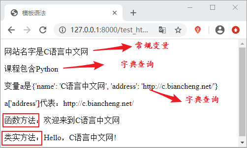

Django模板变量精讲
在上一节《Django 模板加载与响应》中我们详细讲述了 模板与视图函数如何进行配合使用，同时我们介绍了加载与响应模板的两种方式，本节我们将着重讲解 Django 模板语言的语法。
我们知道，模板是文本文件，比如我们常见的有 HTML、CSV、TXT 等。Django 模板语言的语法主要分为以下四个部分：
下面章节我们会对这四部分进行细致的讲解。
我们知道，模板是文本文件，比如我们常见的有 HTML、CSV、TXT 等。Django 模板语言的语法主要分为以下四个部分：
- 变量
- 标签
- 过滤器
- 注释
下面章节我们会对这四部分进行细致的讲解。
1. 模板变量
上一节内容中我们提到了模板变量，并且已经使用了它，如 {{name}}。Django 模板引擎通过context_processors这个上下文处理器来完成字典提供的值（vaule）与模板变量之间的替换，也就是用字典的 vaule“C语言中文网”来替换模板文件 test.html 中的变量 {{name}}，这就好比字典中 key 到 vaule 的映射。而我们无需关心内部细节是如何让实现的，这些由 Django 框架自己完成。提示：当在模板中遇到变量的时候，会根据视图函数来确定这个变量的值，然后将结果输出。
1) 变量的命名规范
Django 对于模板变量的命名规范没有太多的要求，可以使用任何字母、数字和下划线的组合来命名，且必须以字母或下划线开头，但是变量名称中不能有空格或者标点符号。2）模板的变量语法
如何理解模板的变量语法呢？其实它有四种不同的使用场景，分别如下所示：- 索引 index 查询，如 {{变量名.index}}，其中 index 为int类型即索引下标；
- 字典查询方法，{{变量名.key}} 其中 key 代表字典的键，如 a['b']；
- 属性或方法查询，如 {{对象.方法}} ，把圆点前的内容理解成一个对象，把圆点后的内容理解为对象里面的属性或者方法；
- 函数调用，如 {{函数名}}。
注意：在模板中访问对象方法的时候，方法调用不需要加括号，而且只能够调用不带参数的方法；如果不希望自定义的方法被模板调用可以使用 alters_data=Ture 属性，放在方法的结束位置即可。下方代码注释掉地方做了展示，小伙伴们可以自行测试效果。
下面我们对上面变量的语法进行依次的说明，首先在 views.py 中添加如下代码：
def test_html(request):
a={} #创建空字典，模板必须以字典的形式进行传参
a['name']='C语言中文网'
a['course']=["Python","C","C++","Java"]
a['b']={'name':'C语言中文网','address':'http://c.biancheng.net/'}
a['test_hello']=test_hello
a['class_obj']=Website()
return render(request,'test_html.html',a)
def test_hello():
return '欢迎来到C语言中文网'
class Website:
def Web_name(self):
return 'Hello，C语言中文网!'
#Web_name.alters_data=True #不让Website()方法被模板调用
其次在 templates 目录下创建名为 test_html 的 html 文件，然后添加以下代码：
<p> 网站名字是{{ name }}</p> //字典查询
<p> 课程包含{{ course.1 }}</p> //索引查询
<p> 变量a是{{ b }} <p>
<p> a['address']是{{b.address}} </p>//字典查询
<p> 函数fuction：{{ test_hello }}</p> //函数方法调用
<p> 类实例化对象：{{class_obj.Web_name}} </p> //类方法调用
然后在 urls.py 文件中添加路由配置，如下所示：
path('test_html/',views.test_html)
最后运行效果如图 1 所示：

图1：模板语法实例展示
图1：模板语法实例展示
3) 模板传参语法格式
在视图函数中必须将变量封装到字典中才允许传递到模板上，语法格式如下：
#方式1
def xxx_view(request)
dic = {
"变量1":"值1",
"变量2":"值2",
}
return render(request, 'xxx.html', dic)
#方式2
def xxx_view(request)
变量1=值1
变量2=值2
return render(request, 'xxx.html', locals())
提示：locals() 返回当前函数作用域内全部局部变量形成的字典。即将变量与值对应形成字典，并把这个字典作为 locals() 的返回值来使用。
在下一节中，我们会对模板语言的另一个知识点模板标签展开讲解。关注公众号「站长严长生」，在手机上阅读所有教程，随时随地都能学习。内含一款搜索神器，免费下载全网书籍和视频。

微信扫码关注公众号